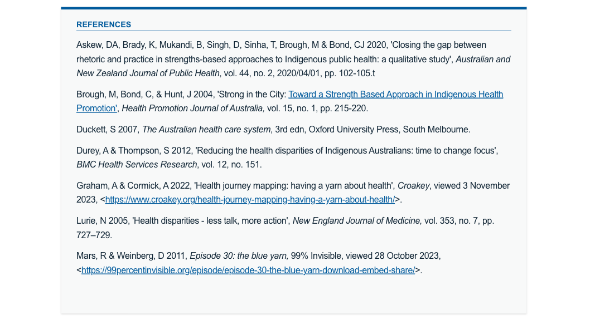
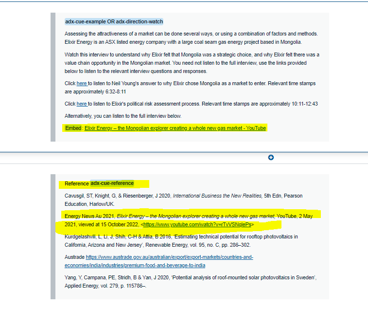
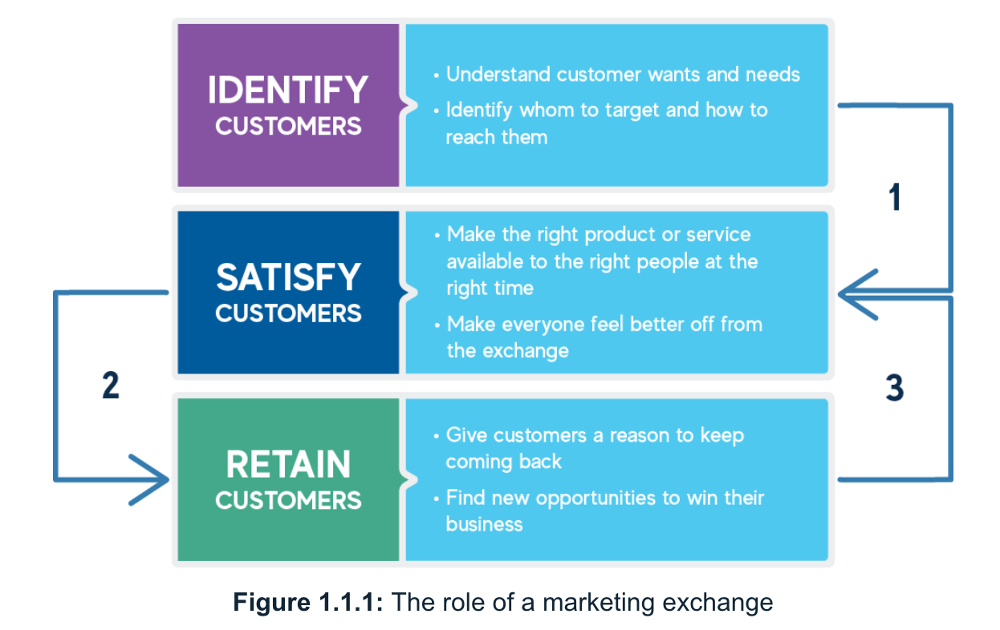
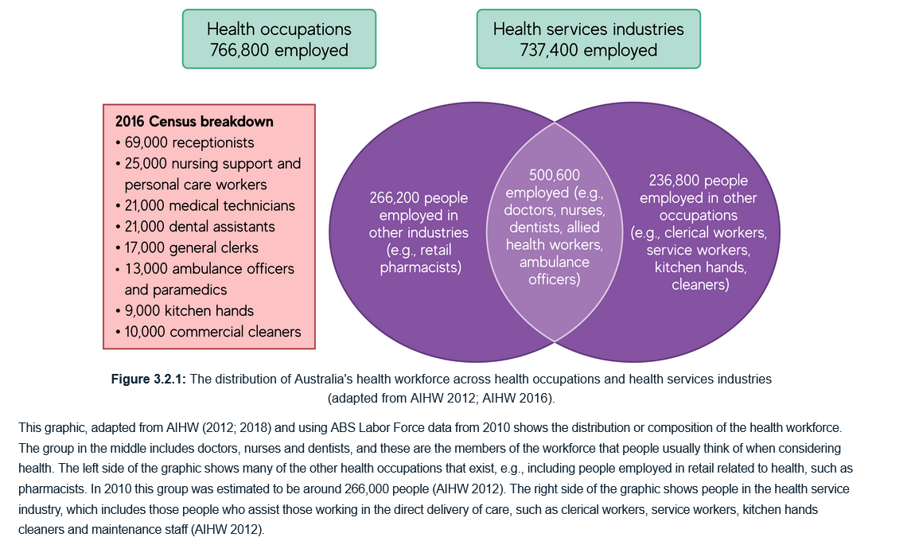
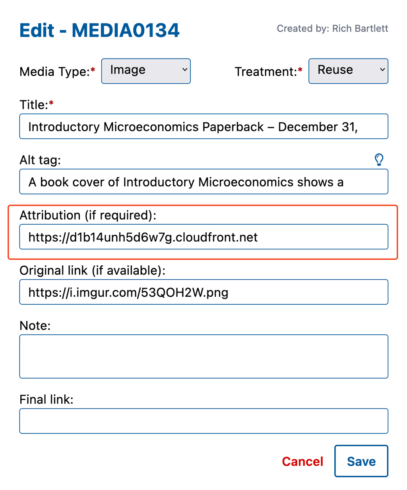
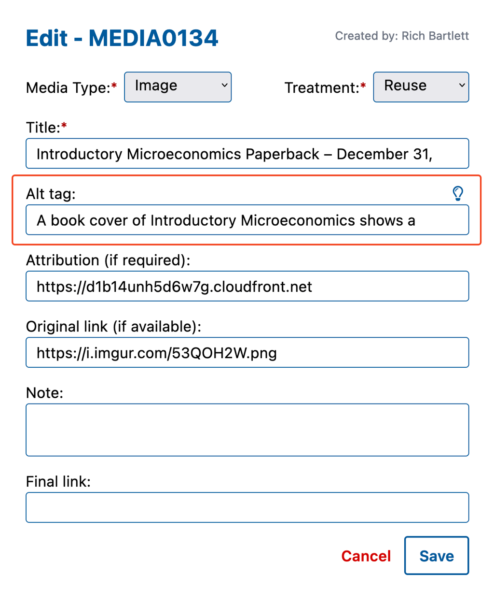
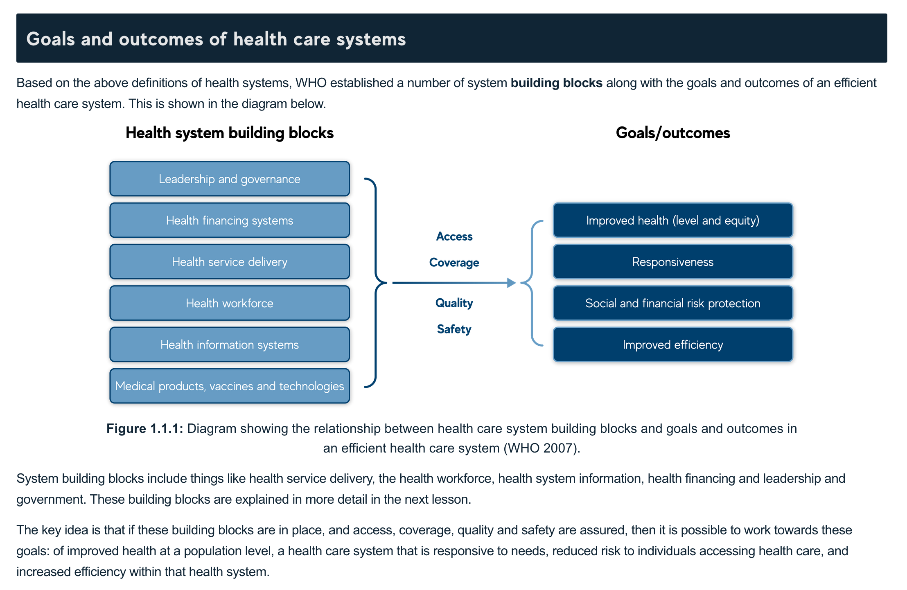
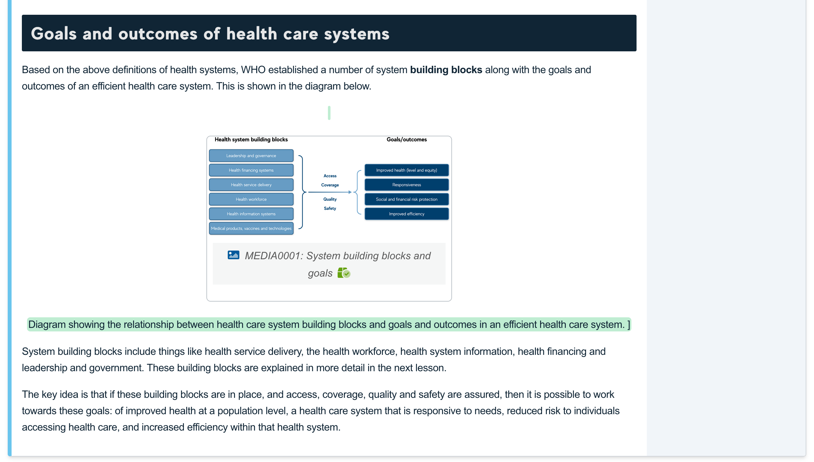

Style Guide
The following written style guide was developed to help guide the teams development of content and editorial processes.
Spelling
As an Australian organisation, the University of Adelaide's English language communications should reflect Australian standard style and Australian spelling. Use Australian spelling as per the Macquarie dictionary (Australian standard reference).
Names of organisations
The name of an organisation should be spelled as the organisation itself spells it.
World Health Organization
Capitalisation
Minimal capitalisation is preferred; however, capital letters are always used for the first word in a sentence, proper nouns and proper names.
No initial capital is required when using a term generically or when the term is not part of a specific title.
school, faculty, centre, government, parliament, department, library, plan and supervisor.
Comparing capitalisation with non-capitalisation
The following examples demonstrate capitalising a job title and not capitalising the same words used in a generic context.
Andrew Beatton, Learning Designer, has been employed by the University of Adelaide since 2014. ('Learning Designer' refers to an official job title.)
Andrew Beatton, who is a learning designer, has been employed by the University of Adelaide since 2014. ('Learning designer' refers to a role in a generic/general sense.)
In Module 3, you will learn about puppies. ('Module 3' is usedin the capital noun sense.)
In this module, you will learn about puppies. ('Module 3' is used in the standard noun sense.)
Hyphenation
Hyphens aid clarity and consistency in written communication.
- post-war or well-being: hyphens combine words to form a single idea or concept.
- ‘re-cover’ (to cover again) versus ‘recover’ (to regain): hyphens avoid ambiguity or confusion when words could have multiple meanings without the hyphen.
- self-esteem: hyphens are used with some prefixes.
- ‘a 15-year-old student’ versus 'a student who is 15 years old': hyphens link compound words before nouns but not after nouns.
- one-third: hyphens link parts of a fraction.
Foreign words
Foreign words should be italicised, and the pronunciation should be provided in parentheses.
The term joie de vivre (zhwah-duh-veev) is a French phrase that describes the enjoyment of life.
Non-Australian English quotes
In quoted material, use the original spelling (and capitalisation) of the quoted material, even if it uses alternative spelling such as ‘color’.
Punctuation
Commas
Commas separate the parts of a sentence such as introductory words/phrases/clauses, non-essential information, independent clauses, lists, words/phrases/clauses inserted into independent clauses including reporting verbs in direct quotations and words/phrases/tag questions and direct quotations added to the end of sentences.
Avoid using the Oxford comma (placed before the last item in a list) unless it clarifies meaning (see Example 2).
The Commonwealth currently includes the UK, Australia and New Zealand.
The Commonwealth currently includes the UK, Australia, and Antigua and Barbuda.
Apostrophes
Apostrophes indicate possession and are used in contractions.
Possession
The school’s values were to respect the rights, differences and dignity of others.
The subject is the values belonging to that one school.
The student's textbook was several decades old and had many torn pages.
The subject is the textbook belonging to one student.
The schools’ policies all outline the consequences of plagiarism.
The subject is the policies of multiple schools.
The students’ bicycles were all stacked against the fence.
The subject is the bicycles belonging to multiple students.
The girls' tennis racquets were left behind when the teacher told everyone to get on the bus.
The subject is tennis racquets belonging to multiple girls.
Plurals
Plural nouns that do not end in an ‘s’ take an apostrophe + ‘s’.
The children’s toys are old.
The possessive form of its does not have an apostrophe.*
The dog put the bone in its mouth.
Contractions
A contraction is a shortened form of a word or group of words, with the omitted letters replaced by an apostrophe).
You’re early. (= You are early.)
It’s too early to leave. (= It is too early to leave.)
Colons
Colons are used to introduce simple lists and to link titles with their subtitles.
Students can choose from a wide range of degrees: arts, international studies, media, social sciences, environmental policy and management, development studies, languages and music.
Title and subtitle
New Directions in Dental Anthropology: paradigms, methodologies and outcomes.
Semicolons
Semicolons are used to link clauses, in lists which already contain commas and before connectors. Semicolons are stronger than commas but weaker than full stops. They are used to link independent clauses that could stand alone as separate sentences but have a closer link than a full stop would imply.
The use of artificial intelligence is increasing; the number of breaches of academic integrity are, too.
Where any item in a list contains an internal comma, use semicolons between the items.
The teams consists of Rosemarie, the learning designer; Nathan, the course author; and Jack, the course builder.
Where a conjunctive adverb or transition phrase separates two independent clauses, place a semi-colon before it.
These changes are expected to improve the recruitment environment once they are fully understood by potential students and agents; however, the new regulatory scheme adds a significant compliance risk and cost for the University.
Shortened forms
When using acronyms and initialisms, be aware that the reader may not be from Australia nor familiar with local terms used in government or higher education. Always write out the shortened form in full in the first instance followed by the shortened form in parentheses (brackets). Write the shortened form from that point on.
The University and the South Australian Health and Medical Research Institute (SAHMRI) entered into a partnership. Professor Steve Nicholls is now working at SAHMRI.
Only a small percentage of Open University Australia (OUA) students are based in South Australia (SA). For this reason, include case studies about organisations based in states other than SA when designing OUA courses.
When not to use capitals
Just because an acronym or initialism is presented in capitals does not mean that the full, spelled-out form is. Normal capitalisation rules apply to the full form.
She was diagnosed with attention-deficit hyperactivity disorder (ADHD).
The University reported on the equivalent full-time student load (EFTSL) for each faculty.
Contractions
Do not use a full stop at the end of contractions.
Dr (Doctor)
Mr (Mister)
Pty Ltd (Proprietary Limited)
Initials
Use the unpunctuated, unspaced form for people’s given name initials.
JM Coetzee
Numbers
In general, write numbers as words up to and including the number nine. Write numbers 10 and above as digits. In text where descriptive narrative text is predominant, and numbers are not a significant focus, use words for numbers up to one hundred. except when starting a sentence.
One, two, five, seven…
There were 90 students in the class.
Ninety students applied for the degree.
Always use numerals for numbers that are accompanied by a symbol, e.g. 18 °C, 4km, 3.5, and when they are in tables.
Spacing after punctuation
Use a single space after sentence punctuation (colon, semicolon, full stop, question mark or exclamation mark).
Quotation marks
Single quotation marks
Single quotation marks are used to:
- show short instances of direct speech and the quoted work of other writers
- enclose the title of certain works
- draw attention to a word you are defining.
'A ban on Russian oil will lead to catastrophic consequences for the global market. The surge in prices will be unpredictable - more than $300 per barrel, if not more,' Novak said in remarks carried by Russian news agencies.
‘Yes, that’s all that happened,’ she replied.
The opposition leader asked, ‘But where’s the money going to come from?’
Quotations within quotations
For quotations within quotations, use double quotation marks inside single ones.
He also wrote, ‘The decisions of the department for “major procurement” were always political choices.’
If the original material uses different conventions for quotation marks, update them to the Australian convention given above.
US style
The President said, “The Prime Minister told me ‘No,’ so I’m working on an updated plan.”
Australian style
The President said, ‘The Prime Minister told me “No”, so I’m working on an updated plan.’
Block quotes
Format long quotes (longer than about 30 words) as block quotes by:
- indenting from the text margin
- setting them in a different font.
When they are set like this, they are called ‘block quotations’.
Do not use quotation marks to identify the quoted material – the formatting does that instead. Block quotes should also be coded with the HTML <blockquote> element. For example:
As Templeton (2019) writes:
According to the ACT Auditor-General, the transport benefits from the project are projected to be lower than the costs. She noted other benefits that had been included by the ACT Government to justify the project.
Draw attention to words using quotation marks
You can use single quotation marks instead of italics to make words stand out from your sentence. Examples include:
- a technical term on its first mention in a non-technical document
- a word or phrase that has been coined or that you are using in a specific sense
- colloquial words, nicknames, slang, or ironic or humorous words and phrases in formal writing.
You do not usually need to repeat the quotation marks the next time you use the word. They might be useful if the next mention is a long way from the first.
Another use of quotation marks is for words introduced by expressions such as ‘titled’, ‘marked’, ‘the term’ and ‘defined as’.
Can anyone here define ‘entropion’?
The survey used the term ‘companion animal’ to describe assistance dogs in workplaces.
Don’t use colors for emphasis in text!
Language
Vocabulary
Use everyday words that people are familiar with to make content easier to read and understand.
Email your receipt by 5 pm today to claim the prize. (easy to read and understand)
You are required to disclose financial documentation in a timely manner or you will be deemed to be disqualified from this prize offer. (less easy to read and understand)
Simple words
There is usually more than one way to express something. Choose the simplest, clearest option.
Try to avoid humorous (rascal), offensive, old-fashioned, spoken (I bet), very formal (ameliorate) and very informal (journo) language.
Important: avoid idioms and unnecessary jargon.
OUA programs
Use vocabulary that includes the needs of both International Business and Health Service Management students particularly in shared courses.
This concept is central in a business setting. (suitable for business students)
This concept is central in an organisational setting. (suitable for business and non-business students)
If synonyms exist for a technical term, explain that there are options and list them, but then choose one and use it consistently throughout the course.
Define important terms.
Can use inline definitions (WCAG G112) - when a word is used in an unusual or restricted way, can provide definition at its first occurrence, within the text, as part of same or separate sentence.
Ether
He believed that sound traveled through the ether, which was thought to be a substance that filled interplanetary space.
Driver
It may be necessary to update the driver for your printer (the driver is software that contains specific instructions for your printer).
W3C key words
Definition: The key words "must", "must not", "required", "shall", "shall not", "should", "should not", "recommended", "may", and "optional" in this specification are to be interpreted as described in RFC 2119.
You can also consider use of glossaries, disciplinary dictionaries, etc. for terms across a course.
Register and tone
According to researchers studying best practice in online education (Moreno & Ayer 2000; Kartal 2000; Clark & Mayer 2016), personalisation in online learning courses usually increases engagement and learning outcomes. However, over-casualising and personalising language can be distracting for the learner. OUA courses need to develop academic and professional literacy skills by exposing the learner to the kinds of written and spoken texts that they are expected to produce.
A ‘semi-formal’ tone which addresses the learner directly in simpler, more casual language is preferred. In activities, assessment briefs and discussion forums, keep language clear and use second person ‘you’ to direct the student. Formal and technical language will be necessary at times.
Polite language
Some research (Brown and Levinson 1987; Wang et al. 2008; McLaren et al. 2011) suggests that being less direct with students in learning task instructions can help less confident students learn better, while higher performing students are unaffected.
Now apply the accounting equation to the following example. (direct)
Please apply the accounting equation to the following example. (less direct)
Personalisation
The concept of personalisation covers the tone of the overall language. Avoid using 'I' to represent the voice of the course as it is inappropriate in an asynchronous environment and meaningless in a context in which the instructors may change.
In activities, assessment instructions and discussion forums, keep language simple and clear using second person (you/your) to clearly direct the student.
In this assessment task, you will write a 1000-word report providing recommendations to the Human Resource Manager of your chosen organisation.
Sensitive or serious content
When the subject material is of a serious or sensitive nature, use of second person (you/your) could be inappropriate or cause distress to the student. Use third person where possible.
If you were diagnosed with cancer, your health care plan would be determined by an oncologist. (inappropriate)
When a person is diagnosed with cancer, their healthcare plan is determined by an oncologist. (appropriate)
Structure
Structure supports the user as they search for information. Use the type of structure that suits the content, and how people will need to consume it.
Modules
Courses are published within MyUni. They are comprised of 13 modules (12 weeks of study and an Orientation module).
More information on the templated structure of the Orientation module for OUA can be found at https://myuni.adelaide.edu.au/courses/87089/modules.
Each weekly module is expected to include the following standard pages:
- Module welcome page (including an overview of the focus of the module, list of lessons, and important details about upcoming assessments and the weekly interactive session
- Main lessons
- Optional end pages:
- Interactive Session pagee
- Module Summary page
A module is expected to include approximately 3 to 5 lessons, though this may vary depending on the specifics of the course.
The format of the module title is: Module #: Title (in title case)
Module 1: Introduction to International Business
The format of the welcome to module page title is: Welcome to Module #: Title (in title case)
Welcome to Module 1: Introduction to International Business
Note that the format of the module title and the welcome to module title is not consistent with the information relating to colons in the punctuation section of this guide as title case (capital letters for a major word and lowercase for a minor word unless it is the first word or proper noun) is used after the colon.
Lessons
Each lesson title poses a central learning question which is referred to as the ‘lesson question’. It relates to the focus of that week’s module. The lesson questions are identified in the Co-create stage of the course development process and recorded in the Course Map in the Course Workspace.
This lesson question is the title of the page in MyUni. The question should, therefore, be worded to include all critical key words that the lesson focuses on, and that a student may need to locate relevant information (e.g. when the student is visually scanning the Modules home page in Canvas to find a lesson they need, or when they are entering search terms into the Canvas search function to find a page addressing something that they need). The size of the Modules home page suggests that lesson questions should not be more than about 15 words. 5 to 10 words is ideal.
The format of the lesson title is: Lesson #.#: Lesson question
Lesson 1.1: Why is ethical behaviour imperative in the global marketplace?
Note that the format of the lesson title is not consistent with the information relating to colons in the punctuation section of this guide as sentence case (a capital letter for the first word and lower case for subsequent words) is used after the colon.
A question mark follows the lesson question.
Once the lesson question and purpose are determined, further planning and writing of the content can begin (identifying sub-topics, key resources, multimedia components, etc.). This work takes place in the Co-create stage and be recorded in the Course Map in the Course Workspace, but it will likely continue to be refined within the SSB tool.
Each lesson has a consistent format including:
- a brief orienting statement at the beginning (summary of the purpose and key points of the lesson)
- a brief orienting statement at the end (signposting the focus of the next lesson in the sequence).
Examples are included below.
This lesson provides a detailed explanation of how the Australian health care system is funded. You will explore funding flows in the Australian health care system, including public, private and other funding. The lesson explains important components of the publicly funded Medicare system, and provides you with the opportunity to investigate health expenditure in Australia and explore the Medical Benefits Schedule (MBS).
This lesson has explained how funding works within the Australian health care system, including the publicly funded system (Medicare), privately funded system (private health insurance) and other funding schemes and arrangements for special cases such as veterans. The next page focuses on another building block of an efficient health system, health service delivery.
The format of the lesson title is: Lesson #.#: Lesson question
The content in each lesson should answer the lesson question.
The remainder of this section provides guidance for the writing of content within a specific lesson.
Once you have decided on the type of structure you need to use, plan the structural elements.
- Use a logical hierarchy or sequential steps for headings.
- Write a topic sentence for each paragraph.
- Display important information in lists, callout boxes, tables and illustrations.
Structure your content by writing about one idea at a time:
- Start with the most important idea first.
- Group related ideas under headings.
- Organise ideas into short paragraphs.
- Make sure ideas flow from one paragraph to the next.
- Use a logical order for sentences.
Headings
Headings help users scan content and find what they need. They are signposts for people and for search engines. Many people skim through headings to check whether a page is relevant before they read it in detail. Search engines use headings to analyse and rank content.
Headings organise information. Clear headings are specific to the topic they describe, and include key words, concepts, and purpose/s addressed by that section or paragraph. They should not exceed approximately 15 words (to fit within a single line when built in Canvas).
Organise content using clear heading levels. Do not use H1 (red line) heading, as this is the overall page title and is automatically applied in build. Begin from H2, and use lower level headings (H3) based on the logical and conceptual relations between sections.
Use keywords to start headings
Start headings and subheadings with keywords that help learners to make a connection.
People scan-read headings to know the relevance of the content. If they use assistive technologies, they might use the tab key to read from heading to heading. Others who use screen readers might generate a list of headings for quick navigation.
The keywords should relate to the main content below the heading. Pay special attention to the first 2 or 3 words. These might be the only words someone reads to decide whether to continue to scan the page or to read the text.
Using keywords at the start of a heading is called ‘frontloading’. Frontloading makes it easier for people to assess the heading’s relevance – either on a web page or in search results. It also helps search engines find your content.
Headings correspond to sections of the text and lesson.
Sections
Sections break up the text into smaller logical components. You may be approaching these in different ways within the Smart Storyboard, depending on your way of working with your academic. For example, you may be using blocks or headings to separate different concepts, subtopics, or activities within the overall lesson.
Each lesson should have standard general frontmatter and endmatter including an orientation sentence (stating what the lesson will cover or do), and a summary sentence (wrapping up the lesson and signposting = pointing ahead to what the next page will do). Each section should also include this, with opening and ending sentences, broken down into logical paragraphs, maybe even using subheadings, etc.
This may include topic sentences, signposting, etc.
Introduce the main idea in the topic sentence
The topic sentence appears at the start of the section (or paragraph, as relevant), and tells the student what the section will cover / what they can expect to find. This can also help students find what they need when they are skimming content.
Each section should address the information that relates to the topic sentence. Keep the section on topic!
For example, insert worked/improved example below
Paragraphs
One idea per paragraph helps learners absorb information. People find it easier to understand content when a paragraph contains only one idea or theme. Don’t introduce a new idea in the middle or at the end of a paragraph. Start a new paragraph instead.
Introduction or summary paragraphs recap ideas covered in the content. If you are writing an introduction that identifies the key learning components on that page, then don't copy and paste the same details at the end of the page; summarise the details (differently to how those details were presented in the introduction) or or Group sentences in these paragraphs by theme – for example, to help users understand how the content is structured.
Organise paragraphs under headings to help users scan the content. Order paragraphs in a logical sequence, such as:
- steps in a transaction
- the order of importance
- the cause of something followed by the effect
- problem then solution
- pros then cons.
This helps people follow related ideas or steps in a sequence.
Expand on the heading in the first paragraph
The first paragraph under a heading helps people decide if they’ve found the information they need. Search engines also use first paragraphs when analysing content.
Use the first paragraph to make the purpose of your content easier to find in searches. It should include a topic sentence and summarise the paragraphs that follow.
Paragraphs with a pronoun
Take care if you are starting a paragraph with a pronoun (for example: I, he, she, they, it, myself, yourself, ourselves, who, which, that, any, several).
It should already be clear who or what the pronoun is referring to. If not, make sure you mention the noun in each paragraph before using the pronoun that substitutes the noun.
The initial amounts for appropriation in 2019–20 were up to:
- $295 million for ordinary annual services
- $380 million for other annual services.
The appropriations increased in March 2020 to account for unforeseen expenditures in relation to COVID-19. (correct) [The new paragraph clearly states what increased in March 2020: ‘the appropriations’.]
The initial amounts for appropriation in 2019–20 were up to:
- $295 million for ordinary annual services
- $380 million for other annual services.
These increased in March 2020 to account for unforeseen expenditures in relation to COVID-19. (incorrect) [The new paragraph uses the demonstrative pronoun ‘these’ to begin the topic sentence. The pronoun does not specify what increased; the topic sentence is unclear.]
Sentences
Write clear sentences using fewer than 25 words if possible. All sentences should use plain language. Even in technical documents, keep sentences to fewer than 25 words. Long sentences often cause long paragraphs.
Sentences in a paragraph develop the main idea from a topic sentence by:
- giving examples or details
- comparing or contrasting
- showing cause and effect
- drawing conclusions from evidence.
In complex content, you might need to use a paragraph or more for each of these points.
Lists
Lists make it easy for users to scan and understand a series of items. Structure and style lists with the user in mind. Set up a grammatical structure for list items with a lead-in.
Structure items in a series as a list
Lists are a series of items. All lists have a 'lead-in' (a phrase or sentence; also known as a 'stem') or heading to introduce the list.
Use lists to:
- help users skim information
- group related information
- help users understand how items relate to each other
- show an order of steps
- arrange information by importance.
Lists can be ordered or numbered (the order is important) or unordered (the order is not critical).
A bullet list can be ordered or unordered.
A numbered list is always ordered.
Don’t use a list if you have only one item. Lists are only for a series of items.
Parallel structure
Write all list items so they have the same grammatical structure. This is called ‘parallel structure’. It makes lists easier to read.
To make a parallel structure, use the same:
- word type to start each item (such as a noun or a verb)
- tense for each item (past, present or future)
- sentence type (such as a question, direction or statement).
Move any words repeated in the list items to the lead-in.
I will:
- read more emails
- go to meetings
- be punctual.
I will be:
- reading more emails
- going to meetings
- punctual.
Punctuation in lists
Unnecessary punctuation makes the list look cluttered. The OPT style is for minimal punctuation to appear in lists.
Punctuate lead-ins and headings consistently. Phrase lead-ins always end in a colon (:).
Sentence lead-ins can end in a colon or a full stop. Choose one punctuation mark and use it for all sentence lead-ins in your document. If in doubt, choose a colon; it is used more commonly.
Headings do not have punctuation marks.
Use minimal punctuation for all lists. In a bullet or numbered list, don’t use:
- semicolons (;) or commas (,) at the end of list items
- ‘and’ or ‘or’ after list items.
Only include ‘and’ or ‘or’ after the second-last list item if it is critical to meaning – for example, you are writing in a legal context. Make sure the lead-in is a clear guide for how this kind of list should be interpreted.
Lead-ins for incomplete lists can use ‘for example’, ‘including’ or ‘includes’.
Don’t write ‘etc.’ at the end of the list to show the list is incomplete.
When listing items that may be additional or optional, write a lead-in to explain any variables.
Select your preference from one of these options: [Lead-in with many options]
Please write your response to any 3 of the following questions: [Lead-in with a specific number of options]
Applicants need to choose between either: [Lead-in with a choice between 2 options]
Some good examples
Here are some examples of lists that follow the principles identified in this section.
In contrast, others have argued that much of an organisation's success or failure is due to external forces outside of the manager's control.
It is called the symbolic view of management. According to this view, a manager's ability to affect performance outcomes is influenced and constrained by external factors.
In this view, an organisation's performance is influenced by factors over which managers have little control, such as:
- the economy
- customers
- governmental policies
- competitors' actions
- industry conditions, and
- decisions made by previous managers.
In the above example, you may want to not include the ', and' from the penultimate bullet point. It has been included to break up the list as there are six items listed.
For managers, it is essential that they are in control of their specific environments. The specific environment consists of:
- employees
- customers
- suppliers
- regulators
- interest groups
- strategic partners, and
- competitors.
Not so good examples
Here are some examples of lists that do not follow the principles identified in this section. Each example has explanations of the principles that have not been followed and an example of how the existing content could be reworded to follow the rules outlined in this section.
Carefully review the 6 provided GovHack project options.
Pay attention to their:
- Topic
- The set challenge or question
- Scope and scale
- What kinds of analysis or other tasks are suggested
- What datasets are provided (under 'Dataset Highlight")
- What previous work has been done by teams in the competition (under 'Challenge Entries')
The above example identifies several issues, including not using parallel structures. This means that the first word in each bullet point is inconsistent; in fact, some word types don't continue the sentence from the lead-in. Compare 1) Pay attention to their Topic (noun form albeit with a capital first letter) with 4) Pay attention to their What kinds of analysis or other tasks are suggested. You should notice that in the context of ii), the use of 'their' in the lead-in with a question form ('What') in the bullet point doesn't parse. The same issue is evident in bullet points five and six; a similar issue is evident in ii) because of the use of 'The': Pay attention to their The set challenge or question. Here is what Example 1 would look like if it was written according to the list rules identified in this section.
Carefully review the six provided GovHack project options. Pay attention to:
- the topic
- the set challenge or question
- the scope and scale
- what kinds of analysis or other tasks are suggested
- what datasets are provided (under 'Dataset Highlights')
- what previous work has been done by teams in the competition (under 'Challenge Entries').
Notice the flow from the lead-in (Pay attention to) to each bullet point; each one is now grammatically correct so that the lead-in flows logically to the bullet point. Also notice the lower case first word in each bullet point and the full stop at the end of the final bullet point. It could be argued that there is inconsistency in the word form of each first word in the list; however, the changes made to the content have ensured that each detail at least continues on from the lead-in in a logical and grammatically correct way.
The purpose of GovHack is to increase open data literacy and use this data to "create projects that better our lives and communities". This includes:
- To provide an opportunity through open data for government, citizens and industry to collaborate, gain knowledge and develop new skills; |
- To showcase open data as a mechanism for identifying and solving deep-rooted social, economic and environmental challenges;
- To impress upon Government the economic and societal value of quality, machine- readable, standardised open data; and
- To highlight the increasing value of open data as a tool to promote transparency, strengthen democracy, and develop trust.
The main issue with the above example is the use of excessive punctuation, in the form of semicolons at the end of each bullet point, which is not recommended. There is also capitalisation of the first word in each bullet point ('To').
The verb forms (provide, showcase, impress and highlight) are consistent, which is correct; however, the repetition of 'to' (four times) could be eliminated by changing the verb form from simple to continuous: 'This includes providing… showcasing… impressing (upon) and highlighting.'
Here is what this would look like if it was written according to the list rules identified in this section.
The purpose of GovHack is to increase open data literacy and use this data to "create projects that better our lives and communities". This includes:
- providing an opportunity through open data for government, citizens and industry to collaborate, gain knowledge and develop new skills
- showcasing open data as a mechanism for identifying and solving deep-rooted social, economic and environmental challenges
- impressing upon government the economic and societal value of quality, machine-readable, standardised open data(, and)
- highlighting the increasing value of open data as a tool to promote transparency, strengthen democracy and develop trust.
Referencing
The Harvard Referencing System is used for both programs. Vancouver may be used in Health Service Management if requested by the Course Author, but Harvard is preferred by the Online Programs team.
The University of Adelaide Referencing Guide explains the technicalities of the Harvard Referencing System. The information below only describes referencing conventions in a general sense.
Sources that are quoted, paraphrased and summarised must be acknowledged both within the text where they are used and at the end of the webpage.
In-text references
In-text references provide key details about a source generally including the author, date of publication and page number.
Place in-text references to emphasise either the information or the author. Each in-text reference must have a corresponding reference list entry (see below).
Intended learning outcomes can be written at three levels: the institutional level, the program level and the course level (Biggs & Tang 2011, p. 113). (information prominent)
According to TEQSA (2017), Australia’s higher education regulatory authority, course design is defined by structurally as 'the content, duration and sequencing of the elements (units) of a course of study”. (author prominent)
Course design is defined by structurally by TEQSA (2017), Australia’s higher education regulatory authority, as 'the content, duration and sequencing of the elements (units) of a course of study”. (author prominent)
Reference lists
Each in-text reference (see above) must have a corresponding reference list entry which gives the full details of the source.
Reference Lists generally appear in a cue box, using the code adx-cue-reference, and are collated alphabetically at the bottom of each lesson page.

There is no need to acknowledge material that is consulted but not used in the text in a bibliography.
Embedded sources such as a video
Full Harvard references should be included on the lesson page, in the bottom Reference Cue Box.
For reference of how they will appear, consider the below example.

Course readings, or external sources
For this, consider the context and the learning intent of the exercise. What will students be using this particular source for? Are you simply pointing them to a source to raise their awareness of it, or are they expected to read the source in full or leverage information from that source in order to complete an activity?
Reference required
If there is an activity around the information contained in the source, then the source should be fully referenced and included in the Reference List at the bottom of the page.
An easy way to think about this is if you are inputting a cue box, such as adx-direction-read or adx-direction-reflect.
For example, where students are directed to read two sources, compare them, and then will use this to discuss their findings in an interactive session. The intext citation is included, with a permalink to the Course Readings to direct students to the article. The full references are added to the Reference List at the bottom.
External Link only
For an example of where you do not need to reference in full, see below. The student is simply being pointed towards some potential sources of data and information, and are sent to one example of a specific report. However, there is no exercise that leverages any information from this site.
Image sourcing conventions
Media production team have conventions on how to handle these. You can see how these appear on the UoA style Guide page here: UoA Styles.
To provide the Media Team with all the right information in the right places and format, input the course information into the “Description” box in the Smart Storyboard Media Asset window.
If the image is open source (e.g. creative commons) there is no attribution necessary. If the image is sourced from a subscription account such as Shutterstock, include the link to Shutterstock in the description, and the name of the image in the Description.
If the image is sourced from a textbook, webpage or journal, use in-text citation with the page number where relevant. Add the full reference to Reference List at bottom of page.
Accessibility Recommendations
Text for images
Requirements and recommendations for accessible (according to WCAG AAA) text captions, short descriptions, alt text and long descriptions below. These should be accommodated when writing the lesson blocks in SSB, and when filling out the fields for each media item.
The overall success criteria of these measures to provide accessible content is if the non-text content were removed from the page and substituted with the short and long descriptions, the page would still provide the same function and information (WCAG G92; G94).
Regarding any non-text content, from both a value and accessible perspective, here are some helpful questions to consider:
- Why is this non-text content here?
- What information is it presenting?
- What purpose does it fulfill?
- If I could not use the non-text content, what words would I use to convey the same function and/or information?
Don’t rely solely on sensory characteristics of components like shape, colour, size, visual orientation, etc. to convey information. If information is conveyed by colour difference, make sure it is also available in text.
Figure Captions
Characteristics
Brief contextualisation and/or title of the image for reference within other text content. This can also be used to provide attribution details.
Responsibility
Learning Designer with Course Author to ensure this present and relevant. Digital Education Developers input the caption into platform with the correct numbering.
This can be the same as the alt text; but this is visible to all to aid both sighted and non-sighted users.
Figure captions appear below images and serve to semantically link a figure and an associated piece of text that ‘belongs’ to the text. We use this space to add numbers (as you might see in textbooks) to figures to allow for easy callback and reference, as well as a brief title or sentence to contextualise and describe the image.

The figure caption here works to give meaningful place and context to an image and helps tie the image to any surrounding content.
We also advise this figure caption to be where any sources or citations are added in-platform, following our standard conventions for media attribution (explicit sources as well as blanket ‘via Shutterstock’-style attribution) and academic referencing standards.
This corresponds to the ‘Title’ field of the Media Item in Smart Storyboard.
The example below shows an image with a Figure caption (corresponding to ‘Title’ in Media item in SSB) and including attribution and referencing. The caption includes essential keywords and is brief (around 120 characters). This has also been used as a basis for the alt text: “The diagram shows the distribution of Australia’s health workforce across health occupations and health services industries.” The alt text is not visible in the Canvas page screenshot because this is only shown to screen reader users. A fuller explanation of the diagram has been provided in text form below the graphic, as part of the lesson body, addressing the different parts of the graphic and their significance. This extended explanation is the long description.

Below is a simpler example, showing basic attribution in the case of a decorative (non-learning) image.
Example of a photograph placed into platform with inline attribution present inside the figure caption
Where does information about attribution come from?
The person sourcing the image in the first instance should strive to provide this information inside the text block and/or the media item inside Smart Storyboard using the Attribution field, and potentially in the media item Title, if the figure caption will require an in-text reference in Harvard style.
Media Asset editing panel as seen within Smart Storyboard, with the Attribution field highlighted

Short Descriptions and Alt Text
Characteristics
Brief contextualisation and/or explanation of the visual content of an image.
Responsibility
Learning Designer with Course Author to ensure this present and relevant.Digital Education Developers input alt text inside MyUni.
Short descriptions and alt text, in practice, refer to the same piece of content used for text alternatives to visual content ('alt text'). This is not visible by default to users not using assistive technologies but are read by screen readers and are relevant to non-sighted users.
Alt text can be visible using debug tools inside web browsers to ensure it is present:
Diagram showing the updated health care system building blocks and their complex interconnected nature.
Ideal text alternative content adds context to an image and describes the image visually - if it is not possible to recreate all of the text or content in an image, the goal is to provide an equitable understanding of what the image is conveying to assistive technologies to ensure learning quality is not affected by not being able to visually see the image when combined with the caption and long description.
The text should include the accepted name or descriptive name of the non-text content, (e.g., accurately identifying a particular book, painting, framework, model, object, etc.).
Alt text should remain relatively short (Approx. 120 characters) so some liberties can be made in describing the image in this manner, but the accompanying text content in the lesson must be relevant and also fulfil a similar purpose (See: Long Descriptions).
Inside Smart Storyboard, please use the Alt Tag field to ensure this content is captured for the build. The text may be similar to the text used for the figure caption (Title field), as appropriate.

Decorative-only Images
Characteristics
Images used solely for decoration and page formatting rather than conveying information or content.
Responsibility
Primarily Digital Education Developers to ensure image is marked as decorative in MyUni and/or the alt attribute is equal to "" inside the HTML.
i.e.: alt=""
Decorative images are images that are not used to convey content or information inherently. Ideally, we would avoid the use of these as much as we can, but there are times where breaking up content visually is sought after for other reasons (visual style, cognitive load, information chunking, etc.).
If an image is purely decorative, indicate this in SSB Media Item notes or Alt Tag field, so that the DED knows to mark it in build with appropriate markup and configuration.
The Web Accessibility Initiative website has a useful decision tree to help you decide whether your image requires an alt tag, and if so, what should be included.
Long Descriptions
Characteristics
Longer form text content that explains the image - This can be extra content linked out to or present on the same page, adjacent to the image.
In practice, this refers to the learning content that is adjacent to the image on the same page.
Responsibility
Learning Designer with Course Author to write the learning content.
Digital Education Developers to include the content as part of the page build and ensure some signposting is present inside the alt text if required (e.g.: Image of October’s sales figures, described in the following paragraph).
In contrast to the previous measures, providing accessible long descriptions involves more than a technical fix or inclusion of content. This concerns the crafting of surrounding content and ensuring the content flow is logical and meaningful. This requires the expertise and collaboration of Learning Designers and Course Authors during course development.
This content is successful when it is able to serve the same purpose and presents the same information as non-text information (WCAG G92).

Within Smart Storyboard, this would be the content present inside the block in a Lesson view.

Additional examples (WCAG)
- A picture shows how a knot is tied including arrows showing how the ropes go to make the knot. The alt text describes how to tie the knot (what is most relevant and useful about the picture), not what the picture looks like (not relevant to the learning in this particular case).
- An animation shows how to change a tire. The alt text briefly describes what the animation is about (changing a tire). The long description describes how to change a tire (the key steps or processes in detail so that a user who cannot watch the animation can also learn the process).
- An image of a series of books on a shelf contains interactive areas that provide the navigation means to a Web page about the particular book. The alt text "The books available to buy in this section. Select a book for more details about that book." describes the picture and the interactive nature, to help the user use the features of the interactive.
- A chart showing sales for October has alt text of "October sales chart". The long description in the body of the text explains the key information conveyed by the chart: "Bar Chart showing sales for October. There are 6 salespersons. Maria is highest with 349 units. Frances is next with 301. Then comes Juan with 256, Sue with 250, Li with 200 and Max with 195. The primary use of the chart is to show leaders, so the description is in sales order."